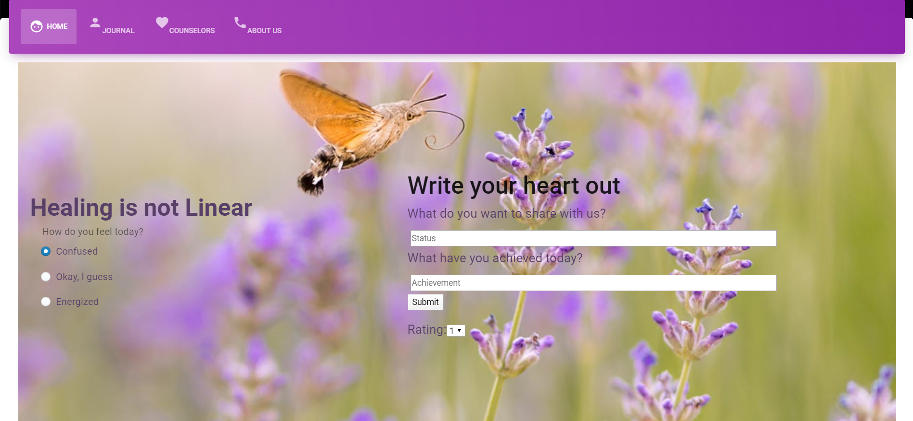

Journaly
February 2020
Role: Designing the Logs page
Technologies: React, Google Firebase, Git/GitHub
Hack@CEWIT project; winner of the "Best Social Impact: Good for Mankind" award!
Repository: https://github.com/k-choonkiat/Journaly
Journaly is an online journal that aims to help individuals suffering from mental health issues and illnesses by connecting users with counselors. After logging in, users can write out their feelings and what they have achieved. For this to work efficiently, users should report at least once a day. Their responses are recorded and then displayed on the Logs page in which they can see other people's posts. These posts will not display their name, but counselors will know who posted what. Additionally, we used the Sentiment Analysis API to identify the prevailing emotion opinion within their posts. Depending on the value, counselors will have the option to contact the user. Users will also be able to rate and take the initiative to contact the counselors.
Journaly was created as a hackathon project for Hack@CEWIT. This hackathon took place at Stony Brook University's Center of Excellence Wireless and Information Technology during the weekend of President's Day (February 14th to February 16th).
My Contributions
We were a team formed right before the hackathon's check-in time. As a result, we spent some time introducing ourselves. After connecting, we decided to aim for a project that was for social good. Although my teammates were unfamiliar with React, we still used it for our frontend. Since I had some experience using React, I tried my best to help them in any shape or form. I made sure to answer their questions and provide them resources.
In addition to helping my teammates with React, I was assigned to create a Logs page in which users can see their posts as well as other people's posts. After wireframing the page, having Google Firebase set up, and populating the database, I fetched the posts from all the users and displayed it on the Logs page.
What I've learned
From Journaly, I learned that collaborating with people who you do not recognize can be exciting and insightful. We all had different skill sets and experiences, but we still managed to work together and create this project. I learned more about React and fetching data from a database, and I also learned that I enjoy helping others. It helped me come out of my shell, and I hope to work with my teammates again in the future.